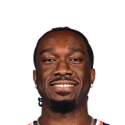

Royce O’Neale on fitting in with the Suns starters:
“I try to fit in with any group I’m in. It was great getting to start with Grayson being out, get him right. Whether I’m starting or coming off the bench, I’m still gonna play the same way”

6 quotes from Royce O'Neale about 7 other people around the NBA, newest first. Each one links to its original source.
Royce O’Neale on fitting in with the Suns starters:
“I try to fit in with any group I’m in. It was great getting to start with Grayson being out, get him right. Whether I’m starting or coming off the bench, I’m still gonna play the same way”
Brian Lewis:Royce O'Neale on facing Donovan Mitchell:
“I’ll guard him a little; I might give him a hard foul or 2. For sure playing against Donovan is going to be a lot of fun. Its going to be different; used to be teammates now guarding each other. So its going to be fun”
Royce O'Neale on Bradley Beal's recent spark:
“All the sacrifices he made from the day I've been here til now, every day he's putting guys in the right situations to get better and being the leader on this team and playing defense.... Heknows what time it is and we got his back”
What NBA players and coaches have said about Royce O'Neale →

Mark Williams1 quoteRoyce O'Neale on Suns injuries as Mark Williams (foot), Grayson Allen (hamstring) and Jordan Goodwin (cal) are listed as questionable for tonight's Game 2 at OKC:
“It's basketball. Injuries happen. You don't want them to, but I think it's just how we bounce back from them. Guys working their way back. Doing all the extra work behind the scenes to come back. Staying healthy is a big part of it. Those guys taking pride coming back. Being able to want to play and then try to get to full strength.”
Royce O'Neale on Jordan Ott being a Coach of the Year candidate:
“He has a way of connecting with the players. Putting us in position to succeed offensively and defensively. Connecting us. He's also willing to listen.”
Royce O'Neale on Bradley Beal's recent spark:
“All the sacrifices he made from the day I've been here til now, every day he's putting guys in the right situations to get better and being the leader on this team and playing defense.... Heknows what time it is and we got his back”
Royce O’Neale on fitting in with the Suns starters:
“I try to fit in with any group I’m in. It was great getting to start with Grayson being out, get him right. Whether I’m starting or coming off the bench, I’m still gonna play the same way”
Brian Lewis:Royce O'Neale on facing Donovan Mitchell:
“I’ll guard him a little; I might give him a hard foul or 2. For sure playing against Donovan is going to be a lot of fun. Its going to be different; used to be teammates now guarding each other. So its going to be fun”
Eric Walden:Jazz forward Royce O'Neale, on Baylor's national championship:
“Me and Dennis [Lindsey] are gonna rub it in everyone's faces for a little while.”